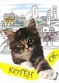

Котенок
Девочке на птичьем рынке купили котенка, и он стал любимцем в семье музыканта. Но случайно Тиграша, так его назвали, выпал из окна и попал на брезентовую крышу «Газели». В результате путешествия по предновогодней Москве Тиграша уехал далеко от своего дома. Ему повезло — он попал в руки одинокого доброго человека, уже приютившего много кошек в своей комнатушке.
Девочке на птичьем рынке купили котенка, и он стал любимцем в семье музыканта. Но случайно Тиграша, так его назвали, выпал из окна и попал на брезентовую крышу «Газели». В результате путешествия по предновогодней Москве Тиграша уехал далеко от своего дома. Ему повезло — он попал в руки одинокого доброго человека, уже приютившего много кошек в своей комнатушке.
 Кошки против собак (2001)
Кошки против собак (2001)Они — хитры. Они — вороваты. Они начинают сверхсекретную войну на высшем технологическом уровне за власть над миром, и все — под нашим носом. Они кошки и собаки! Посмотрите что получится, когда эксцентричный профессор совершит открытие, способное нарушить древний баланс власти четвероногих...
Кошачий глаз (1985)
Фильм объединяет в себе три новеллы — две из них из сборника «Ночная смена»: «Корпорация «Бросайте курить» и «Карниз». Третья — объединяющая новелла «Генерал» написана специально для фильма. Главным связующим звеном фильма является бездомный кот, пытающийся спасти маленькую девочку от неизвестной опасности...
Фильм объединяет в себе три новеллы — две из них из сборника «Ночная смена»: «Корпорация «Бросайте курить» и «Карниз». Третья — объединяющая новелла «Генерал» написана специально для фильма. Главным связующим звеном фильма является бездомный кот, пытающийся спасти маленькую девочку от неизвестной опасности...
Черный кот (1981)
Небольшой провинциальный городок в окрестностях Лондона лихорадит от загадочных убийств. Детектив Скотланд Ярда, — Корлей ведущий расследование преступлений пришел к выводу, что виновником смертей не мог быть человек…Их объединяет одно, — следы кошачьих лап и порезы от когтей на теле...
Небольшой провинциальный городок в окрестностях Лондона лихорадит от загадочных убийств. Детектив Скотланд Ярда, — Корлей ведущий расследование преступлений пришел к выводу, что виновником смертей не мог быть человек…Их объединяет одно, — следы кошачьих лап и порезы от когтей на теле...